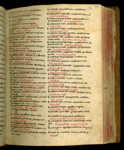
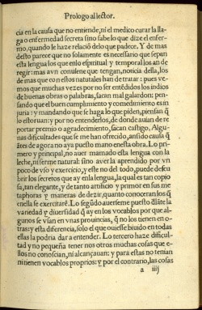
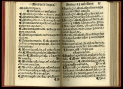
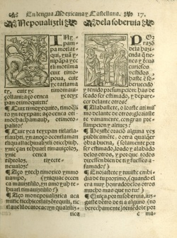
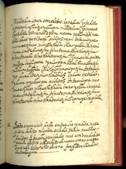
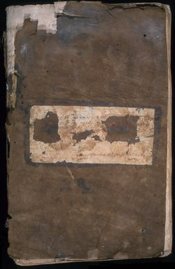
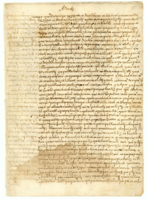
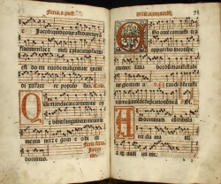
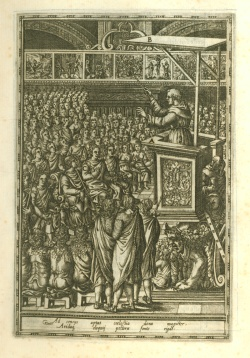

La evangelización de los nahuas
La conversión religiosa, desde el punto de vista de los colonizadores españoles, era un método eficiente para lograr la estabilidad política dentro de los nuevos territorios conquistados. Para alcanzar esta meta, los misioneros dedicados a evangelizar las poblaciones indígenas de México asumieron la tarea de hacer disponible el mensaje cristiano en lenguas indígenas. Para conseguir el éxito, los frailes también necesitaban un conocimiento profundo de la cultura y la religión de los nahuas.
La estrategia central de conversión era educar a los hijos de la nobleza utilizando el modelo de las escuelas indígenas (calmecac). En las nuevas escuelas, se separaba a los niños de sus familias, criándolos y educándolos para convertirse en los líderes cristianos de sus propias comunidades. Este sistema resultó en la creación de una elite indígena que participó en un esfuerzo monumental para estudiar la cultura y lenguaje de los aztecas. Esta elite también fue responsable de la creación de una tradición literaria nahua: esto es, una tradición indígena formada y transmitida a través de la escritura alfabética.
Newberry Library: Vault Ayer MS 1478
La Gramática y Diccionario de Antonio Nebrija ofrecen el primer estudio sistemático de la lengua española. Su metodología, derivada de estudios académicos del latín, proporcionó un modelo lingüístico que los misioneros españoles aplicaron al estudio de las lenguas indígenas y utilizaron para crear una versión alfabética del náhuatl.
Esta copia manuscrita del diccionario impreso de Nebrija es trilingüe—náhuatl (en tinta roja) se ha añadido al español y latín del original. Aunque el autor es desconocido, se cree que es un hablante nativo de náhuatl. La especialista Mary L. Clayton encuentra evidencia de esto en la manera que el autor traduce ciertas expresiones y frases del idioma español. La autoría indígena también sugiere que este diccionario manuscrito era para el uso de hablantes de náhuatl y no del español.
Newberry Library: Ayer 871 .A952 M7 1555
Los frailes usaban el estudio y la alfabetización del náhuatl para encontrar maneras apropiadas de comunicar el mensaje cristiano. Diferencias culturales y lingüísticas, grandes obstáculos en el proceso de evangelización, dieron a los nahuas cierta flexibilidad para moldear las creencias y practicas cristianas a favor de sus propias necesidades religiosas y tradiciones culturales.
En este pasaje de su Vocabulario, el padre Alonso de Molina comenta algunas de las dificultades que encontró elaborando el primer diccionario impreso de español-náhuatl.
Newberry Library: Vault Ayer 871 .A953 M7 1571
Los misioneros españoles recurrieron a la elite indígena para colaborar en la traducción de la tradición cristiana y controlar la religiosidad indígena. La elección del habla de los nobles como el lenguaje literario para la educación y evangelización indígena era, como Molina revela, un método consciente de parte de los frailes.
El Arte de la lengua del padre Alonso de Molina tuvo un papel muy importante en la estandarización del náhuatl clásico como el lenguaje del cristianismo nahua.
Newberry Library: Vault Ayer 871 .A955 C35 M7 1565
La confesión católica tenía cercanos paralelos con la práctica indígena de neiolmelaoaliztli. Esto planteó un gran reto para los frailes que necesitaban aclarar las diferencias entre las dos tradiciones. Sin embargo, era casi imposible evitar confusiones de este tipo al enseñar la doctrina cristiana. Muchos frailes terminaron por ignorar los significados religiosos implícitos en muchas prácticas indígenas.
El Confesionario breve del Padre Molina muestra que la composición de un confesionario en náhuatl fue un arte sutil que involucraba tanto una tarea de traducción lingüística como de interpretación cultural.
Newberry Library: Vault Ayer MS 1467

La iglesia católica estaba profundamente perturbada por los esfuerzos de traducir la Biblia a lenguas vernáculas. La traducción al latín que San Jerónimo completó en el año 406, la Vulgata, era la versión oficial de la Biblia católica. Después del Concilio de Trento (1545-1563), la iglesia, preocupada por preservar la autoridad de la Vulgata como la única fuente de la palabra divina, consideraba las versiones de la Biblia en la lengua nativa de los lectores como una peligrosa amenaza.
Los misioneros, sin embargo, necesitaban que su audiencia entendiera el mensaje. Junto con los sermones, las traducciones nahuas de la Biblia llegarían a ser una poderosa y singular expresión del cristianismo indígena. El libro Epistolae et Evangelia es una recopilación de una selección de pasajes de la Biblia traducidos al náhuatl para lecturas del domingo y días festivos de la iglesia.
Newberry Library: Ayer MS 1484
Estos ejercicios espirituales diarios estaban diseñados para reforzar la conciencia indígena de las enseñanzas del evangelio. Cada día comenzaba con un pasaje de la Biblia, seguido por una meditación diseñada para profundizar el conocimiento y amor al Dios cristiano, y para enseñar la obediencia de los mandamientos. Esta sección dedicada al domingo explica el nuevo contrato entre Dios y los cristianos y el misterio de la Eucaristía. Las palabras de Jesús están citadas en latín y traducidas al español y náhuatl para la audiencia indígena.
Newberry Library: Vault oversize Ayer MS 1485
La colección de sermones en náhuatl de Sahagún para la misa dominical y los días de los santos es, según el especialista Frederick Schwaller, “un cuidadoso entretejer de la filosofía moral y creencias aztecas con el dogma y fe católica”. La necesidad de hacer el cristianismo comprensible para los nahuas llevó al fraile a adaptar el contenido y el lenguaje del texto. Las dificultades que enfrentó son evidentes en sus comentarios en español al margen del texto principal, donde reflexiona sobre cómo hacer el mensaje más eficaz.
Newberry Library: Ayer MS 1486a

A su colección de lecturas bíblicas básicas en náhuatl (las utilizadas en la liturgia y la predicación del evangelio), Sahagún agregó una exposición de virtudes teológicas (fe, esperanza y caridad) y la visión cristiana de la vida después de la muerte (el infierno, el cielo y la muerte). El Yn nemachtiliztlatolli (discurso instructivo) provee una rápida perspectiva general de la doctrina cristiana para los Nahuas recientemente convertidos. La última sección expuesta aquí trata el tema de la muerte y el juicio. El texto usa un estilo reconocible de la tradición oral de los nahuas para explicar la visión cristiana del destino del alma en el momento de la muerte. La firma del padre Sahagún se encuentra en la parte inferior de la página.
Newberry Library: Ayer MS 1486d
Los frailes misioneros temían la interpretación errada de la doctrina cristiana entre los nuevos conversos, a quienes ellos no consideraban completamente fieles al catolicismo. Respondiendo a esta preocupación, Sahagún añadió un apéndice a la colección de sus escrituras doctrinales, en el cual incluyó amonestaciones que específicamente advertían a los indígenas respecto a algunas de sus creencias tradicionales.
Un fragmento del Apéndice comienza por cuestionar la creencia nahua de que las lágrimas y la penitencia de los niños complacen a Titlacahuan, el tloque naoaque (el señor de lo cerca y lo junto, una noción indígena del “ser supremo” que a veces se aplicaba al dios cristiano).
Newberry Library: Case VM 2149.G73 1576
Este gradual (libro de coro) contiene las partes cantadas de las misas dominicales para las fiestas que tratan de Cristo. Publicado en México, esta copia está firmada por Juan Hernández, un cantor del siglo dieciséis de la Catedral de la Cuidad de México, la cual tenía coros nahuas desde 1532. Encontrado entre las ruinas de una iglesia indígena destruida durante la revolución mexicana, este libro fue dado a Francisco Plancarte, el arzobispo mexicano de Linares, México, por los indígenas a los que le pertenencia. En 1916, el arzobispo Plancarte le presentó este tomo a la Newberry.
Newberry Library: Wing ZP 535 .P447
Nacido en 1533, hijo de una madre nahua y un padre español, Diego Valadés fue el primer mestizo que entró a la orden Franciscana. Elegido como representante franciscano al Vaticano y enviado a Roma en 1570, Valadés escribió e ilustró la Rhetorica Christiana, el primer relato publicado acerca de la evangelización de México.
Valadés representa a su mentor el fraile Pedro de Gante usando imágenes para instruir a los feligreses indígenas. El espacio, un idealizado patio delantero de una iglesia, celebra el establecimiento del cristianismo en México.
Newberry Library: Ayer folio F1219.73 .S24 1993
Entre 1559 y 1561, el padre Sahagún entrevistó ancianos nobles indígenas eruditos en el pequeño pueblo de Tepeapulco los cuales le mostraron una variedad de documentos pictográficos cuando le respondían sus preguntas acerca de la religión y cultura azteca. Cuatro nobles indígenas con la habilidad de hablar español, náhuatl y latín con fluidez (anteriormente estudiantes de Sahagún en el Colegio de Santa Cruz establecido por los franciscanos en Tlatelolco, Ciudad de México) le ayudaron como escribanos e hicieron los dibujos de los manuscritos.
Aunque Sahagún buscaba crear herramientas para eliminar las prácticas religiosas aztecas, ahora su trabajo es una de las principales fuentes de información acerca de la cultura y prácticas religiosas aztecas. Atamalqualiztli involucra múltiples dioses aztecas y tiene lugar cada ocho años.
La Historia general de las cosas de Nueva España De Fray Bernardino de Sahagún
La gran obra de Sahagún es su compendio enciclopédico de doce libros sobre la religión, historia, cultura, y lenguaje azteca, la Historia general de las cosas de Nueva España. Escrita por Sahagún en colaboración con informantes y ayudantes indígenas, el manuscrito incluye texto en náhuatl (columna derecha) y español (columna izquierda), y está lujosamente ilustrado con más de 1850 dibujos. La Historia está ahora en la biblioteca Medicea Laurenciana en Florencia y se le conoce como Códice Florentino.
Newberry Library: Ayer folio F1229 .S23 1979 vol. 1
Los niños aztecas usualmente son bautizados por su fecha de nacimiento y un sabio adivino consultaba un tonalamatl (calendario adivinatorio), como el Códice Borbónico, para determinar las posibilidades futuras del niño. En el texto náhuatl que acompaña este dibujo, se le dice al lector que el bebé será bañado ceremonialmente tres días después para asegurar la buena fortuna brindada por haber nacido el día 10 conejo.
Newberry Library: Ayer folio F1229 .S23 1979 vol. 2
La pericia en la artesanía con plumas, un arte precolombino muy valorado, continuó en gran demanda durante el siglo XVI en México. En estas pinturas, paneles rectangulares de magueyes verdes y de algodón blanco muestran el proceso de artesanía con plumas. El alto nivel de destreza de estos artesanos indígenas está indicado por su ropa (prendas europeas con gorguera combinados con capas tradicionales) y el estilo europeo de las plataformas revestidas de azulejos y las columnas y arcos en la arquitectura. El uso apropiado de pictogramas nahuas para explicar el proceso de la artesanía con plumas sugiere que artistas indígenas son quienes pintaron estas escenas.
Newberry Library: Ayer folio F1229 .S23 1979 vol. 3
En esta escena, barcos españoles están anclados a poca distancia de la costa de Veracruz debajo de un arco iris y están descargando mercancías para comerciar, caballos, perros, ganado y puercos. Tres personas están de pie a la derecha: un indígena vistiendo una capa intercambia gestos con una mujer indígena (Malintzin, la intérprete de Cortés); Cortés está frente a ellos; y sentado, Jerónimo de Aguilar escribe.
Esta escena puede haber sido inspirada en una pintura de un testigo presencial, hecha por el tlacuilo (pintor/escribano) de Motecuhzoma enviado para documentar a los recién llegados. En el preámbulo, Sahagún le dice al lector que el Libro 12 está basado en la versión de la guerra hecha por los conquistados e incluye detalles que los conquistadores españoles no sabían.